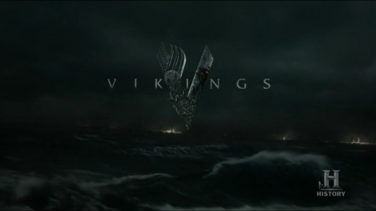

Vikings é uma série de televisão de drama histórico escrita e criada por Michael Hirst para a emissora History. Filmada na Irlanda, a série estreou em 3 de março de 2013 no Canadá e terminou em 30 de dezembro de 2020 com distribuição em streaming pela Prime Video.
A série é inspirada nas sagas do Viking Ragnar Lodbrok, um dos mais conhecidos heróis nórdicos lendários e chamado de flagelo da Inglaterra e da França. A série retrata Ragnar como um fazendeiro que alcança a fama por seus ataques bem-sucedidos na Inglaterra e, mais tarde, se torna um Rei escandinavo, com o apoio de sua família e colegas guerreiros: seu irmão Rollo, seu filho Bjorn Flanco de Ferro, e suas esposas, a escudeira Lagertha e a princesa Aslaug.
Sinopse
A série segue as explorações do lendário líder Viking Ragnar Lodbrok, inspirado em sagas nórdicas e histórias de invasões, comércio e exploração dos Nórdicos da Escandinávia medieval. A série retrata eventos históricos como o ataque viking a Lindisfarne, e a interação com povos de diferentes territórios como os saxões e francos.
Imagem de Abertura de Vikings

Imagem de abertura da série Vikings
Temporadas
1ª Temporada (2013)
A série começa com Ragnar Lodbork, um guerreiro nórdico em busca de expandir seu poder, enfrentando a oposição de Earl Haraldson e iniciando suas aventuras na Inglaterra.
2ª Temporada (2014)
A temporada mostra a transformação da relação de Ragnar com sua esposa Aslaug e o conflito com Rollo, ao mesmo tempo em que os vikings enfrentam desafios em novas terras, como Wessex.
3ª Temporada (2015)
Ragnar se torna Rei de Kattegat, com novas conquistas em terras saxãs e um ataque decisivo a Paris.
4ª Temporada (2016–17)
Após os conflitos com Floki e a derrota em Paris, Ragnar tenta recuperar sua posição enquanto seu filho Bjorn assume responsabilidades em Kattegat.
5ª Temporada (2017–19)
A 5ª temporada traz uma série de novas disputas pelo poder, com a invasão de novos territórios e a ascensão de novos líderes vikings.
6ª Temporada (2019-20)
A temporada final acompanha os desdobramentos do reinado de Ivar e as consequências das ações de Ragnar, chegando ao fim da saga viking.